Beyond CPU - Hardware Acceleration for Edge AI
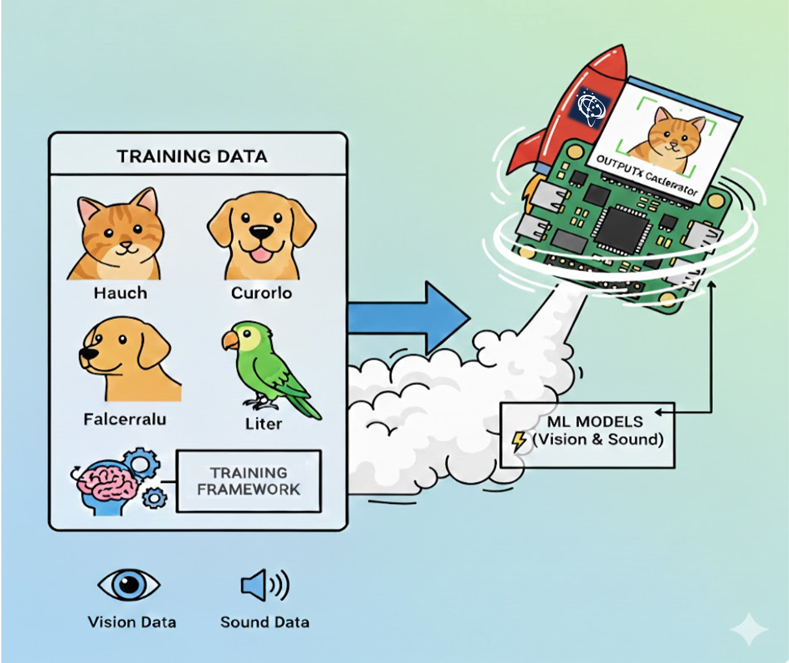
Hardware Acceleration with MemryX MX3 on Raspberry Pi 5.
Introduction
Throughout this course, we’ve explored various approaches to deploying AI models at the edge. We started with TensorFlow Lite running on the Raspberry Pi’s CPU, then moved to YOLO and ExecuTorch with optimized backends like XNNPACK. While these software optimizations significantly improve performance, they still rely on the general-purpose CPU to execute neural network operations.
In this chapter, we’ll take the next step: dedicated hardware acceleration. We’ll use the MemryX MX3 M.2 AI Accelerator Module—a specialized processor designed specifically for neural network inference. The MX3 module contains four AI accelerator chips that can run deep learning models with dramatically lower latency and power consumption compared to CPU execution.
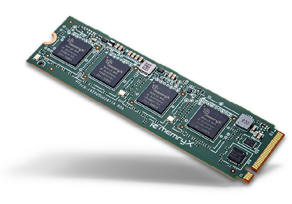
Why Hardware Acceleration?
Consider the requirements for real-time edge AI applications: - Latency: Autonomous systems need predictions in milliseconds - Power efficiency: Battery-powered devices must conserve energy - Throughput: Multi-camera systems may need to process several streams simultaneously - Cost: System designs often cannot afford high-end GPUs
The MX3 addresses these challenges with a unique architecture: - At-memory computing: All memory is integrated on the accelerator, eliminating bandwidth bottlenecks - Pipelined dataflow: Optimized for streaming inputs with a batch size of 1 - Floating-point accuracy: No quantization required (though supported) - Low power: Maximum 10W for four accelerator chips
For learning more about AI Acceleration, please refer to MLSys book and how the MemryX module works, read the Architecture Overview.
Our goal
By the end of this lab, we will have installed and configured the MX3 hardware on a Raspberry Pi 5, set up the MemryX SDK and development environment, and gained a clear understanding of the MX3 compilation and deployment workflow. We will also compile neural network models for execution on the MX3 accelerator, compare their performance against CPU-based inference while analyzing the trade-offs, and finally build a complete end-to-end inference pipeline using the MemryX Python API.
Hardware Installation and Verification
Prerequisites
Before starting this lab, we should have:
Raspberry Pi 5 with M.2 HAT+ adapter (or similar)
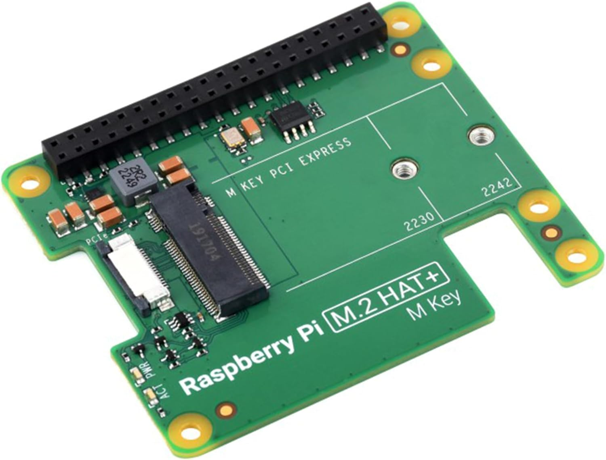
IMPORTANT NOTE: MemryX recommends the GeeekPi N04 M.2 2280 HAT as an excellent choice for the Raspberry Pi 5. It delivers solid power and fits the 2280 MX3 M.2 form factor. Some hats can lead to instabilities, mainly due to PCIe speed (Gen3). The Raspberry Pi 5 can have stability issues on Gen3.
The Raspberry Pi M.2 HAT+ is a good option. It works very well, despite the fact that we should adapt the MX3 board to it (The MX3 is longer than the hat).
MemryX MX3 M.2 module with the heatsink installed
For heatsink installation, follow the video instructions: https://youtu.be/wNmka0nrRRE
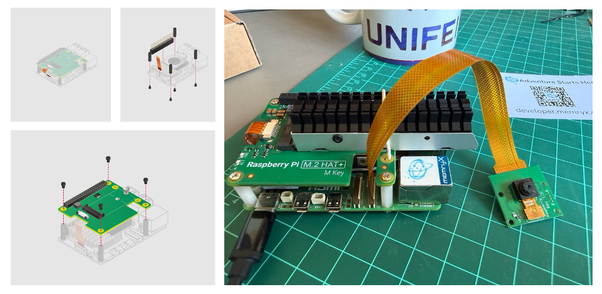
Installation and Cooling Considerations
It is essential to ensure we have sufficient cooling for the MemryX MX3 M.2 module, or we may experience thermal throttling and reduced performance. The chips will throttle their performance if they hit 100 °C.
During normal operation, the current MemryX MX3 temperature and throttle status can be viewed at any time with:
cat /sys/memx0/temperatureOr measurd continuay every 1 second, for example with the command:
watch -n 1 cat /sys/memx0/temperatureVerification
After installing the hardware, turn on the Raspberry Pi and verify the system setup.
ls /dev/memx*It should return: /dev/memx0
If the device is not detected, see the Troubleshooting section below.
Let’s also check the initial temperature:

The lab temperature at the time of the above measurement was 25 °C.
Software Installation
Create Project Directory
First, we should create a project directory:
cd Documents
mkdir MEMRYX
cd MEMRYXPython Version Management with Pyenv
Verify your Python version:
python --version If using the latest Raspberry Pi OS (based on Debian Trixie), it should be:
Python 3.13.5
Or, if the OS is the Legacy version:
Python 3.11.2
Important: As of January 2026, MemryX officially supports only Python 3.09 to 3.12. Python 3.13.5 is too new and will likely cause compatibility issues. Since Debian Trixie ships with Python 3.13 by default, we’ll need to install a compatible Python version alongside it.
One solution is to install Pyenv, which allows us to easily manage multiple Python versions for different projects without affecting the system Python.
If the Raspberry Pi OS is the legacy version, the Python version should be 3.11, and it is not necessary to install Pyenv.
Installing Pyenv on Debian Trixie
If you need to install Pyenv on Debian Trixie, follow these steps:
# Install dependencies
sudo apt install -y make build-essential libssl-dev zlib1g-dev \
libbz2-dev libreadline-dev libsqlite3-dev wget curl llvm \
libncursesw5-dev xz-utils tk-dev libxml2-dev libxmlsec1-dev \
libffi-dev liblzma-dev
# Install pyenv
curl https://pyenv.run | bash
# Add to ~/.bashrc
echo 'export PYENV_ROOT="$HOME/.pyenv"' >> ~/.bashrc
echo 'command -v pyenv >/dev/null || export PATH="$PYENV_ROOT/bin:$PATH"' >> ~/.bashrc
echo 'eval "$(pyenv init -)"' >> ~/.bashrc
# Reload shell
source ~/.bashrc
# Install Python 3.11.14
pyenv install 3.11.14This process takes several minutes as it compiles Python from source.
Set Python Version for Project
Once Pyenv and the selected Python version are installed, define it for the project directory:
pyenv local 3.11.14Checking the Python version again, we should see: Python 3.11.14.
MemryX Drivers and SDK Installation
The MemryX software stack consists of two main components:
- Drivers (
memx-drivers): Kernel-level drivers for PCIe communication with the accelerator hardware - SDK (
memx-accl): Python libraries, neural compiler, runtime, and benchmarking tools
Prepare the System
Install the Linux kernel headers required for driver compilation:
sudo apt install linux-headers-$(uname -r)Add MemryX Repository and Key
This command downloads the repository’s GPG key for package verification and adds the MemryX package repository:
wget -qO- https://developer.memryx.com/deb/memryx.asc | sudo tee /etc/apt/trusted.gpg.d/memryx.asc >/dev/null
echo 'deb https://developer.memryx.com/deb stable main' | sudo tee /etc/apt/sources.list.d/memryx.list >/dev/nullUpdate and Install Drivers and SDK
sudo apt update
sudo apt install memx-drivers memx-acclConfigure Platform Settings
Run the ARM setup utility to configure platform-specific settings. This opens a menu to select the platform and apply the necessary configurations (e.g., enabling PCIe Gen 3.0 on the Raspberry Pi 5):
sudo mx_arm_setup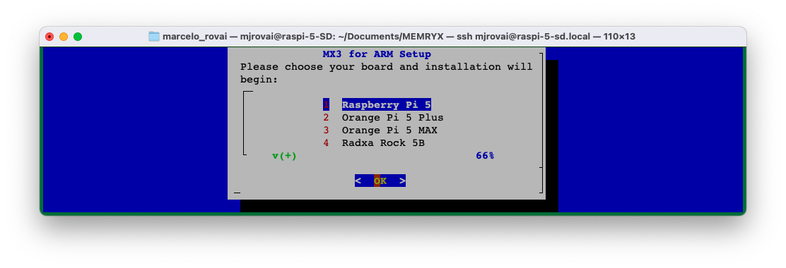
Select the appropriate option for your hardware, and press <OK> in the next page:
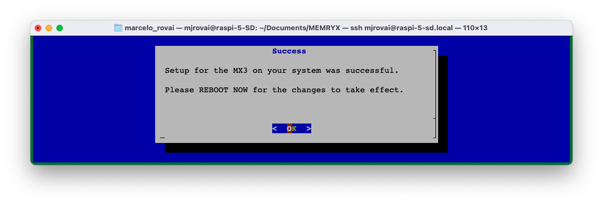
After configuration, reboot the system:
sudo rebootVerify Driver Installation
After rebooting, verify that the MemryX driver is installed by checking its version:
apt policy memx-drivers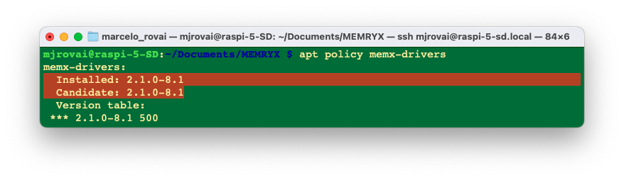
Install Utilities
Install additional utilities including GUI tools and plugins:
sudo apt install memx-accl-plugins memx-utils-guiPrepare System Dependencies
Install system libraries required for the Python SDK:
sudo apt update
sudo apt install libhdf5-dev python3-dev cmake python3-venv build-essentialInstall Tools (Inside Virtual Environment)
It’s best practice to use a virtual environment to avoid conflicts with system packages.
Create and activate a virtual environment:
python -m venv mx-env
source mx-env/bin/activateInside the environment, install the MemryX Python package:
pip3 install --upgrade pip wheel
pip3 install --extra-index-url https://developer.memryx.com/pip memryxVerify the neural compiler is installed:
mx_nc --version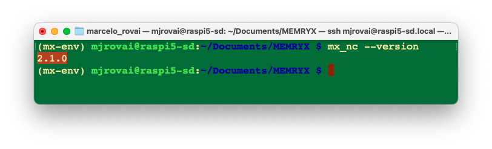
Verification
Verify the complete installation by running the built-in “hello world” benchmark:
mx_bench --hello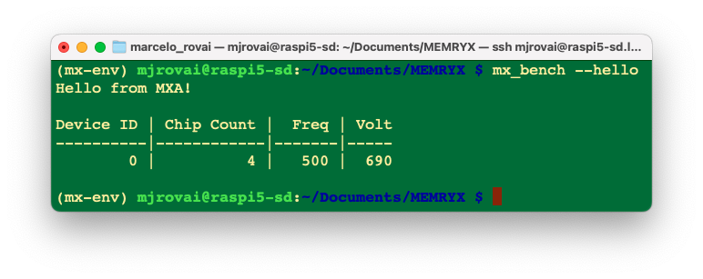
With the benchmark results, our MemryX MX3 is properly installed and ready to use.
Our First Accelerated Model
Understanding the MX3 Workflow
Working with the MemryX MX3 follows a straightforward four-step workflow that differs from traditional CPU-based inference:
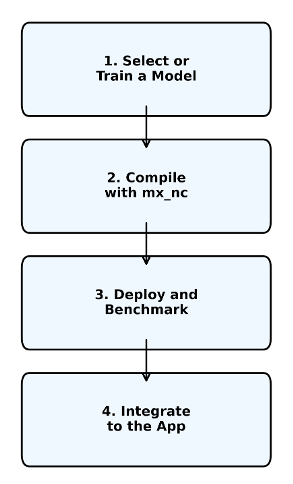
Step 1: Select or Train a Model
Start with a pre-trained model or train your own. MemryX supports models from major frameworks:
- TensorFlow/Keras (.h5, SavedModel)
- ONNX (.onnx)
- PyTorch (.pt, .pth) (Should be converted to ONNX first)
- TensorFlow Lite (.tflite)
The model remains in its original format—no framework-specific conversions needed yet. For this lab, we’re using MobileNetV2 from Keras Applications, but we could equally use a custom model we have trained for a specific task, as we have seen before.
Supported Operations: The MX3 supports most common deep learning operators (convolutions, pooling, activations, etc.). Check the supported operators list if using custom architectures. Unsupported operations will fall back to CPU, though this is rare for standard vision models.
Step 2: Compile with Neural Compiler
The MemryX Neural Compiler (mx_nc) transforms the model into a DFP (Dataflow Package):
mx_nc [options] -m <model_file>Common compilation options: - -v : Verbose output showing compilation stages - -c <chip_count> : Target specific number of chips (1-4) - -q <8|4> : Apply quantization (8-bit or 4-bit)
What happens during compilation?
- Model parsing: Loads the model and extracts the computational graph
- Graph optimization: Fuses operations, eliminates redundancies
- Operator mapping: Maps each layer to MX3 hardware instructions
- Dataflow scheduling: Determines optimal execution order for pipelined processing
- Memory allocation: Assigns on-chip memory for all intermediate activations
- Multi-chip distribution: If using multiple chips, partitions the workload
The compiler is surprisingly tolerant—most models compile without any modifications. If a layer isn’t supported, you’ll get a clear error message indicating which operation failed.
Compilation time varies by model complexity: - Small models (MobileNet): ~30 seconds - Medium models (ResNet50): ~2 minutes
- Large models (EfficientNet): ~5 minutes
Once compiled, the DFP file is portable across all MX3 hardware.
Step 3: Deploy and Benchmark
Before integrating into our application, we can verify performance with the benchmarking tool:
mx_bench -d <dfp_file> -f <num_frames>The benchmarker: - Generates synthetic input data matching the model’s input shape - Runs warm-up inferences to stabilize performance - Measures throughput (FPS), latency, and chip utilization - Reports first-inference latency (includes loading overhead)
Why benchmark separately? Because real-world applications involve preprocessing (image loading, resizing) and postprocessing (parsing outputs). Benchmarking isolates pure inference performance, letting to identify bottlenecks in our full pipeline.
Step 4: Integrate into the Application
Finally, integrate the accelerator into our Python application using the MemryX API:
from memryx import SyncAccl # or AsyncAccl for concurrent processing
# Initialize accelerator with our DFP
accl = SyncAccl(dfp="model.dfp")
# Run inference
output = accl.run(input_data)
# Process results
# ...
# Clean up
accl.shutdown()Synchronous vs. Asynchronous APIs:
SyncAccl: Blocking calls, simple to use, good for single-stream processingAsyncAccl: Non-blocking, better for multi-stream or real-time applications
The API handles all hardware communication, memory transfers, and scheduling. Our code just provides input tensors and receives output tensors—the complexity is abstracted away.
Complete Workflow Example
Let’s see the four steps in action with MobileNetV2:
# Step 1: Get a model (already trained)
python3 -c "import tensorflow as tf; tf.keras.applications.MobileNetV2().save('mobilenet_v2.h5');"
# Step 2: Compile to DFP
mx_nc -v -m mobilenet_v2.h5
# Step 3: Benchmark
mx_bench -d mobilenet_v2.dfp -f 1000
# Step 4: Integrate (see full Python script in next section)
python run_inference_mobilenetv2.pyThis workflow is remarkably consistent across models and use cases. Once we’ve done it for one model, adapting to others is straightforward.
Key Takeaway: The MX3 workflow separates compilation (done once) from inference (done repeatedly). This “compile-once, run-many” approach means the optimization overhead is amortized over thousands or millions of inferences in production.
Download and Compile MobileNetV2
On Keras Applications, we can find deep learning models that are made available alongside pre-trained weights. These models can be used for prediction, feature extraction, and fine-tuning.
Let’s download MobileNetV2, which was used in previous labs:
python3 -c "import tensorflow as tf; tf.keras.applications.MobileNetV2().save('mobilenet_v2.h5');"The model is saved in the current directory as mobilenet_v2.h5.
Next, we will compile the MobileNetV2 model using the MemryX Neural Compiler. This step verifies that both the compiler and the SDK tools are installed and functioning as expected:
mx_nc -v -m mobilenet_v2.h5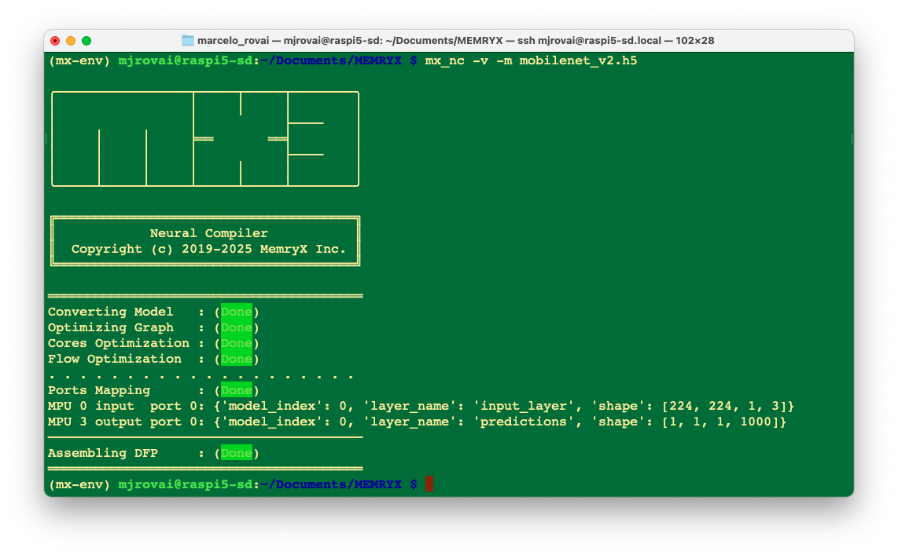
The compiled model,
mobilenet_v2.dfp, is saved in the current folder.
What is a DFP file?
The .dfp (Dataflow Package) file is MemryX’s proprietary compiled format. Unlike standard model formats (H5, ONNX, etc.) that describe the network architecture, a DFP file contains:
- Optimized operator graph: The network restructured for dataflow execution
- Memory layout: Pre-calculated memory allocations for at-memory computing
- Chip mappings: Instructions for distributing work across the four MX3 accelerators
- Quantization parameters: If applicable, the bit-width and scaling factors
The neural compiler (mx_nc) performs this transformation automatically, with no manual tuning required. The compilation process: 1. Parses the input model (H5, ONNX, TFLite, etc.) 2. Maps operators to MX3-supported operations 3. Optimizes the dataflow graph 4. Allocates memory on-chip 5. Generates the DFP binary
This is why compilation takes a few minutes, but inference is blazingly fast—all the optimization work happens once, upfront.
Benchmarking Performance
Now that the model is compiled, it’s time to deploy it and run a benchmark to test its performance on the MXA hardware. We will run 1000 frames of random data through the accelerator to measure performance metrics:
mx_bench -v -d mobilenet_v2.dfp -f 1000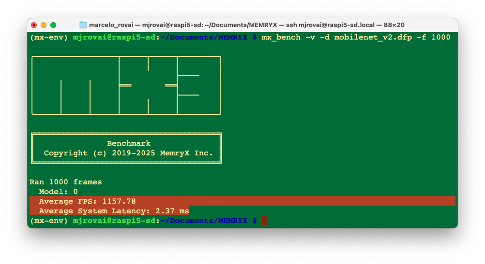
Let’s understand what these metrics mean:
- FPS (Frames Per Second): How many images the accelerator can process per second (~1,200 FPS for MobileNetV2)
- Latency: Time for a single inference (shown as “Avg” in the output)
- Subsequent inferences: True steady-state performance (~2ms)
- Throughput: Total data processed per second
The benchmark runs with random input data, which is why we see consistent performance. Real-world performance with actual images should be similar once the preprocessing pipeline is optimized, but we have found bigger latency.
Power consumption during benchmarking is around 12W (2.4A), and the module temperature reaches approximately 60°C.
Building an Inference Application
Now let’s build a complete inference application that processes real images and compares CPU vs. MX3 performance.
Prepare Directory Structure
Let’s create subdirectories for organization:
mkdir models
mkdir imagesDownload Test Image
Load an image from the internet, for example, a cat (for comparison, it is the same as used on previous chapters):
wget "https://upload.wikimedia.org/wikipedia/commons/3/3a/Cat03.jpg" \
-O ./images/cat.jpgHere is the image:
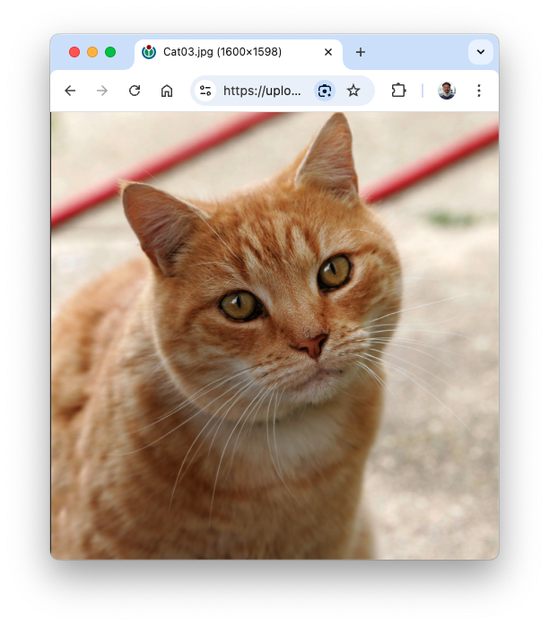
Understanding Input Requirements
All neural networks expect input data in a specific format, determined during training. For MobileNetV2 trained on ImageNet:
- Input shape: (224, 224, 3) - RGB images at 224x224 pixels
- Batch dimension: Models expect batch inputs, so (1, 224, 224, 3) for single images
- Preprocessing: MobileNetV2 uses specific normalization (scaling pixel values to [-1, 1])
- Color channels: RGB order (not BGR)
The preprocessing must match exactly what was used during training, or accuracy will suffer.
Getting the Labels
For inference, we will need the ImageNet labels. The following function checks if the file exists, and if not, downloads it:
import os, json
from pathlib import Path
import requests
MODELS_DIR = Path("./models")
IMAGENET_JSON = MODELS_DIR / "imagenet_class_index.json"
IMAGENET_JSON_URL = (
"https://storage.googleapis.com/download.tensorflow.org/data/imagenet_class_index.json"
)
# ---- one-time label download ----
def ensure_imagenet_labels():
MODELS_DIR.mkdir(parents=True, exist_ok=True)
if IMAGENET_JSON.exists():
return
print("Downloading ImageNet class index...")
resp = requests.get(IMAGENET_JSON_URL, timeout=30)
resp.raise_for_status()
IMAGENET_JSON.write_bytes(resp.content)
print("Saved:", IMAGENET_JSON)The function load_idx2label() loads the labels into a list:
def load_idx2label():
with open(IMAGENET_JSON, "r") as f:
class_idx = json.load(f)
idx2label = [class_idx[str(k)][1] for k in range(len(class_idx))]
return idx2labelImage Preprocessing
The image used for inference should be preprocessed in the same way as during model training. keras.applications.mobilenet_v2.preprocess_input() takes an image of shape (224, 224) and converts it to (1, 224, 224, 3):
import numpy as np
from PIL import Image
import tensorflow as tf
from tensorflow import keras
def load_and_preprocess_image(image_path):
img = Image.open(image_path).convert("RGB").resize((224, 224))
arr = np.array(img).astype(np.float32)
arr = keras.applications.mobilenet_v2.preprocess_input(arr)
arr = np.expand_dims(arr, 0) # Add batch dimension
return arrPrepare Input Tensor
The processed image will serve as the model’s input tensor (x):
ensure_imagenet_labels()
idx2label_full = load_idx2label() # length 1000 for ImageNet
IMAGE_PATH = Path("./images/cat.jpg")
x = load_and_preprocess_image(IMAGE_PATH)Run Inference on MemryX Accelerator (MXA)
Move the models (the original and compiled) to the models folder and set up the paths:
MODELS_DIR = Path("./models")
DFP_PATH = MODELS_DIR / "mobilenet_v2.dfp"
KERAS_PATH = MODELS_DIR / "mobilenet_v2.h5"Run inference on the compiled model using the MemryX accelerator:
from memryx import SyncAccl
accl = SyncAccl(dfp=str(DFP_PATH))
mxa_outputs = accl.run(x)We get a list/array of outputs. In this case, with a shape of (1, 1000) and a dtype of float32. This output should be normalized to a NumPy array:
mxa_outputs = np.array(mxa_outputs)
if mxa_outputs.ndim == 3:
mxa_outputs = mxa_outputs[0]Decode the MXA Results
Now, using helper functions to extract top-k predictions:
def topk_from_probs(probs, k=5):
"""
probs: (1, num_classes) or (num_classes,)
Returns [(index, prob)] sorted by prob desc.
"""
probs = np.array(probs)
if probs.ndim == 2:
probs = probs[0]
# If outputs are logits, uncomment this:
# probs = tf.nn.softmax(probs).numpy()
s = probs.sum()
if s > 0:
probs = probs / s
idxs = np.argsort(probs)[::-1][:k]
return [(int(i), float(probs[i])) for i in idxs]
def label_for(idx, idx2label):
if idx2label is not None and idx < len(idx2label):
return idx2label[idx]
return f"class_{idx}"We can decode and print the results:
mxa_top5 = topk_from_probs(mxa_outputs, k=5)
print("\nMXA top-5:")
for idx, prob in mxa_top5:
name = label_for(idx, idx2label_full)
print(f" #{idx:4d}: {name:20s} ({prob*100:.1f}%)")Expected output:
MXA top-5:
# 282: tiger_cat (38.6%)
# 281: tabby (18.3%)
# 285: Egyptian_cat (15.2%)
# 287: lynx (3.9%)
# 478: carton (1.7%)Comparing CPU vs. MXA Performance
We can also run the unconverted model (mobilenet_v2.h5) on the CPU, applying the code to the same input tensor:
cpu_model = keras.models.load_model(KERAS_PATH)
cpu_outputs = cpu_model.predict(x)
num_classes = cpu_outputs.shape[-1]
idx2label = idx2label_full if num_classes == len(idx2label_full) else None
cpu_top5 = topk_from_probs(cpu_outputs, k=5)
print("\nCPU top-5:")
for idx, prob in cpu_top5:
name = label_for(idx, idx2label)
print(f" #{idx:4d}: {name:20s} ({prob*100:.1f}%)")Expected output:
CPU top-5:
# 282: tiger_cat (58.4%)
# 285: Egyptian_cat (12.9%)
# 281: tabby (11.6%)
# 287: lynx (3.4%)
# 588: hamper (1.3%)Despite the probabilities not being identical, both models reach the same top prediction. The slight differences are due to numerical precision variations between CPU and accelerator implementations.
Measuring Latency
Let’s create a complete Python script (run_inference_mobilenetv2.py) that also measures and compares latency for both CPU and MXA.
Note: The following sections break down the complete inference script into logical components. The full working script is available separately and integrates all these pieces together.
To measure latency accurately, we’ll add timing code:
import time
# Warm-up run
_ = accl.run(x)
# Timed inference
start = time.time()
mxa_outputs = accl.run(x)
mxa_latency = time.time() - start
print(f"\nMXA latency: {mxa_latency*1000:.2f} ms")Run the complete script run_inference_comp_mobilenetv2.py in the terminal:
python run_inference_comp_mobilenetv2.pyExpected results:
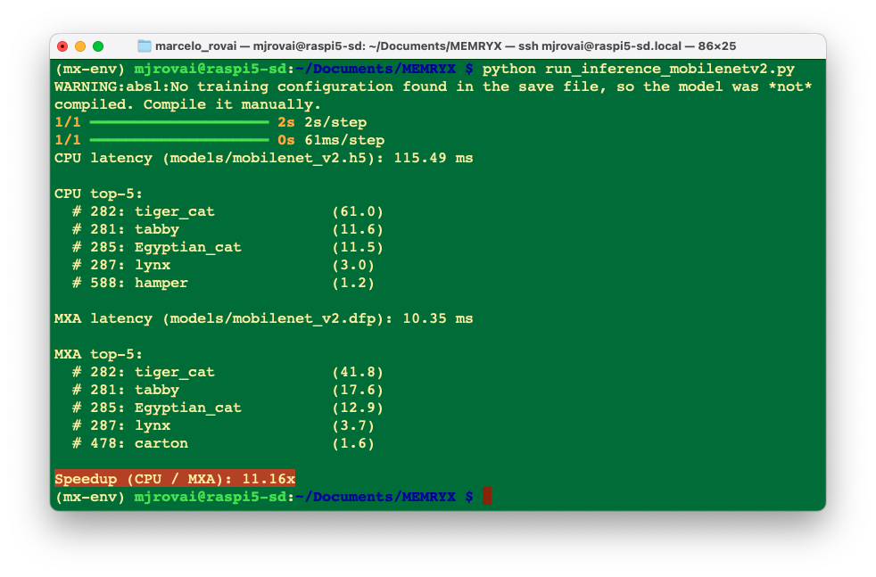
The Accelerator runs 11 times faster than the CPU!
The MobileNet V2 running with ExecuTorch/XNNPACK backend on a CPU has around 20 ms of latency.
Testing with Larger Models
We can also test a larger model like ResNet50:
# Download ResNet50
python3 -c "import tensorflow as tf; tf.keras.applications.ResNet50().save('resnet50.h5');"
# Compile
mx_nc -v -m resnet50.h5
# Run the script in the terminal:
python run_inference_comp_resnet50.pyThe script can be found in the lab repo: run_inference_comp_resnet50.py in the terminal:
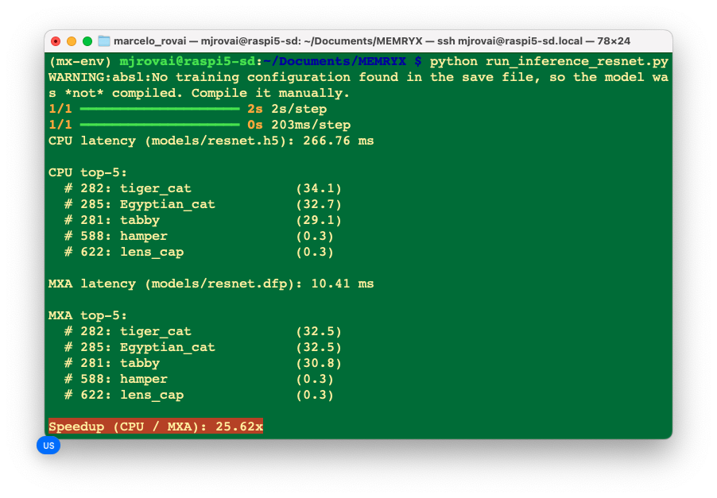
The performance improvements are even more dramatic with larger models!
Clean Shutdown
Always properly shut down the accelerator when done:
accl.shutdown()BTW, to shut down the Raspberry Pi via SSH, we can use
sudo shutdown -h nowFolders Structure
Documents/MEMRYX/
├── run_inference_comp_mobilenetv2.py # MobileNetV2 script
├── run_inference_comp_resnet50.py # ResNet50 script
├── images/
│ ├── cat.jpg # Test image
├── models/
│ ├── mobilenet_v2.h5 # Original model
│ ├── mobilenet_v2.dfp # Compiled model
│ ├── resnet50.h5 # Original model
│ ├── resnet50.dfp # Compiled model
│ └── imagenet_class_index.json # Labels (auto-downloaded)
└── mx-env/ Performance Comparison Summary
Here’s how the MX3 compares across different deployment approaches we’ve covered in this course:
| Approach | Hardware | MobileNetV2 Latency | ResNet50 Latency | Power (Active) |
|---|---|---|---|---|
| TFLite (CPU) | Raspberry Pi 5 | ~110 ms | ~266 ms | ~ |
| ExecuTorch/XNNPACK | Raspberry Pi 5 | ~20 ms | NA | ~ |
| MemryX MX3 | Dedicated accelerator | ~10 ms | ~10 ms | ~ |
Key Observations
- 25x faster than unoptimized TFLite on CPU (Resnet50)
- 2x faster than highly optimized ExecuTorch with XNNPACK (MobileNetV2)
- Minimal CPU load: The host CPU is free for preprocessing, postprocessing, and application logic
- Consistent latency: Hardware acceleration provides deterministic performance
- Power efficiency: Not measured
When to Use the MX3?
The MemryX MX3 is ideal for:
- ✅ Real-time applications requiring <20ms latency
- ✅ Multi-stream processing (multiple cameras, sensors)
- ✅ Power-constrained environments where CPU load matters
- ✅ Production deployments requiring consistent, predictable performance
- ✅ Complex models where CPU inference is too slow
The MX3 may be overkill for:
- ❌ Simple models that run fast enough on CPU
- ❌ Non-latency-critical batch processing
- ❌ Prototyping where development speed matters more than performance
- ❌ Very cost-sensitive applications
Perfect! You have a clean, working script. Let me help you create a comprehensive tutorial structure for YOLOv8 inference with MX3 hardware acceleration. Here’s what I suggest:
YOLOv8 Object Detection with MX3 Hardware Acceleration
In this part of the lab, we’ll deploy YOLOv8n (nano) for real-time object detection using the MemryX MX3 AI accelerator on Raspberry Pi 5. We’ll cover the complete workflow from model export to inference optimization.
But first, we should install ULTRALYTICS
The MemoryX team suggested:
pip install ultralytics==8.3.161If you face issues, try it with:
pip install ultralytics[export]If you still have issues, reinstall memryx
pip3 install --extra-index-url https://developer.memryx.com/pip memryxNow, download the YOLOv8.pt model and test it:
yolo predict model='yolov8n' source='https://ultralytics.com/images/bus.jpg'The model and the image bus.jpg will be download and tested with the YOLOV8n:
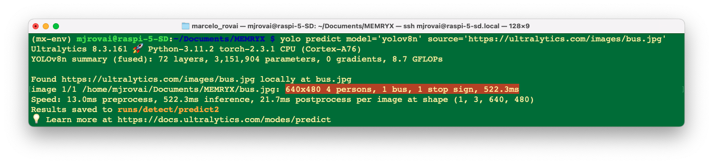
4 persons, 1 bus, and one stop signal were detected in 522 ms.
Under ./runs/detect, the output processed image can be analysed:
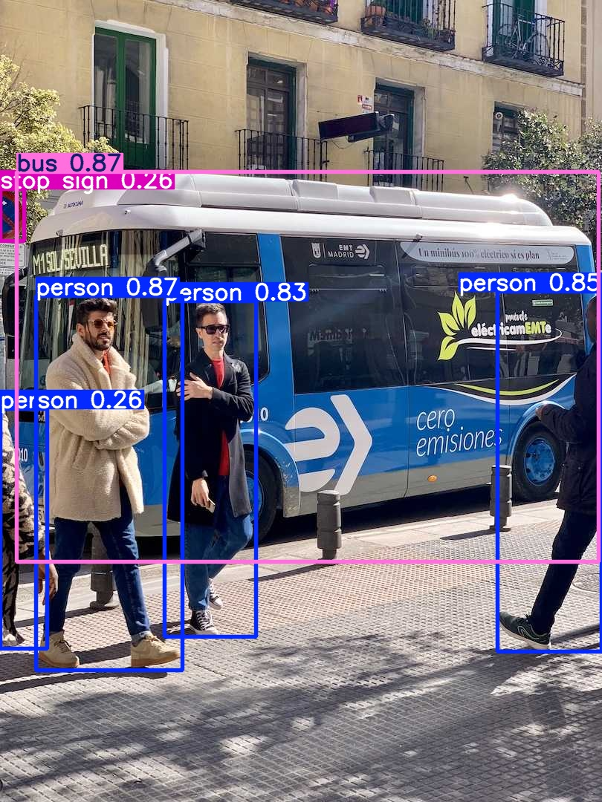
Model Export and Compilation
Step 1: Export YOLOv8 to ONNX
YOLOv8 must be converted to ONNX format before compilation for the MX3:
from ultralytics import YOLO
#### Load pretrained YOLOv8n model
model = YOLO('yolov8n.pt')
#### Export to ONNX format
model.export(format='onnx', simplify=True)This creates yolov8n.onnx with the complete model graph.
We can also use CLI for the conversion:
yolo export model=yolov8n.pt format=onnx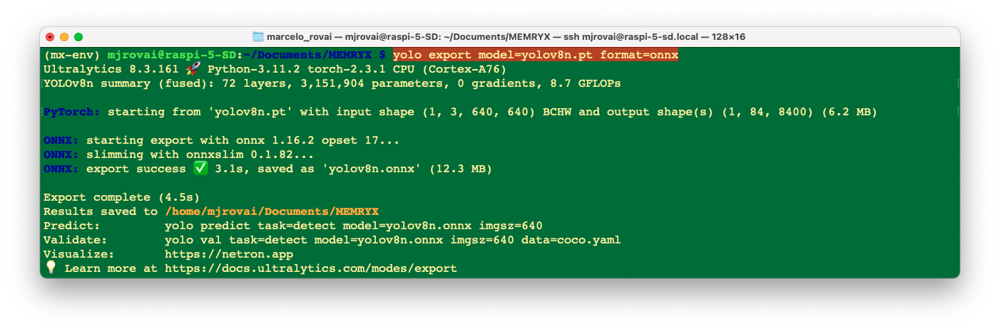
Step 2: Compile for MX3
We can use the MemryX Neural Compiler to generate the DFP file:
mx_nc -v --autocrop -m yolov8n.onnxKey flags:
-v: Verbose output for debugging-m: Input model path--autocrop: Automatically split model for optimal MX3 execution
Output files:
yolov8n.dfp- Accelerator executable (runs on MX3 chips)yolov8n_post.onnx- Post-processing model (runs on CPU)
Why Two Files?
The MX3 compiler splits the model:
- Feature extraction (yolov8n.dfp): Neural network backbone on MX3 hardware
- Detection head (yolov8n_post.onnx): Bounding box decoding on CPU
This hybrid approach optimizes performance by running computationally intensive operations on the accelerator while keeping final post-processing flexible.
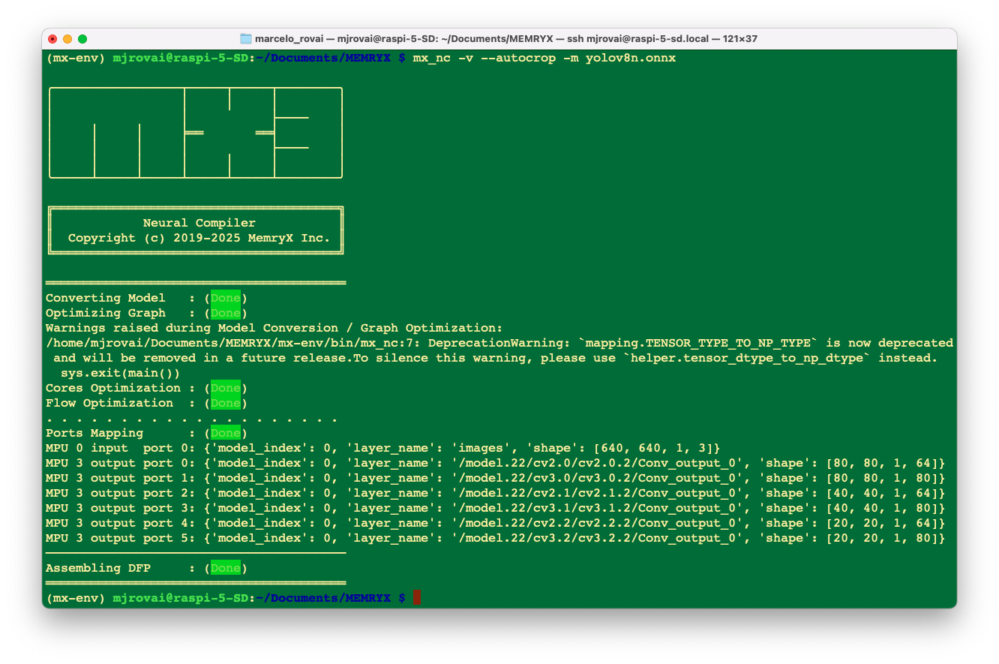
Now, let’s check the model with a benchmark
mx_bench -d yolov8n.dfp -f 1000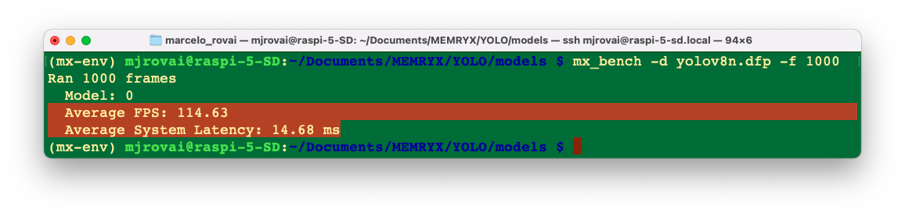
Understanding YOLOv8 Output Format
YOLOv8 Output Structure
The post-processing model outputs predictions in shape (1, 84, 8400):
- Dimension 0 (1): Batch size
- Dimension 1 (84):
- First 4 values: Bounding box
[x_center, y_center, width, height] - Next 80 values: Class probabilities (COCO dataset)
- First 4 values: Bounding box
- Dimension 2 (8400): Anchor points across three detection scales:
- 80×80 = 6400 points (small objects)
- 40×40 = 1600 points (medium objects)
- 20×20 = 400 points (large objects)
Decoding Process
- Transpose: Convert from
(1, 84, 8400)→(8400, 84) - Extract: Separate boxes and class scores
- Filter: Keep predictions above confidence threshold
- Convert coordinates: Transform from
xywhtoxyxy - NMS: Remove overlapping detections
- Scale: Map to original image coordinates
Complete Inference Pipeline
We should now create a script to run an object detector (YOLOv8 with a pre/post-processing pipeline), print each detection (label, confidence, bounding box), and save a copy of the image with the boxes drawn.
Configuration section
At the top of __main__ we define the configuration values:
DFP_PATH = "./models/yolov8n.dfp"
POST_MODEL_PATH = "./models/yolov8n_post.onnx"
IMAGE_PATH = "./images/bus.jpg"
CONF_THRESHOLD = 0.25DFP_PATH: path to the compiled model used for inference.
POST_MODEL_PATH: path to a post-processing model or graph, usually converting raw outputs into boxes, scores, and class IDs.
IMAGE_PATH: image file we want to run detection on.
CONF_THRESHOLD: minimum confidence score; detections below this are filtered out.
In a tutorial you can explain that changing these values lets the user swap models or images without modifying the rest of the code.
Running detection
detections, annotated_image, inference_time = detect_objects(
DFP_PATH,
POST_MODEL_PATH,
IMAGE_PATH,
CONF_THRESHOLD
)Here we call a helper function detect_objects that encapsulates the heavy lifting:
- Loads the model(s).
- Loads and preprocesses the image.
- Runs inference.
- Applies post-processing (NMS, thresholding, etc.).
- Returns:
detections: list/array where each element is[x1, y1, x2, y2, conf, class_id].
annotated_image: a PIL image with bounding boxes and labels drawn.
inference_time: time spent doing the detection (in milliseconds).
Printing results
print(f"\n{'='*60}")
print("Detection Results:")
print(f"{'='*60}")
for i, det in enumerate(detections):
x1, y1, x2, y2, conf, class_id = det
print(f" {i+1}. {COCO_CLASSES[int(class_id)]}: {conf:.3f}")
print(f" Box: [{int(x1)}, {int(y1)}, {int(x2)}, {int(y2)}]")- The loop goes over each detection, unpacks the bounding box coordinates, confidence, and class ID.
COCO_CLASSES[int(class_id)]converts the numeric class index into a human-readable label (e.g., “person”, “bus”).
- Coordinates are cast to
intfor cleaner printing.
Saving the annotated image
if len(detections) > 0:
output_path = IMAGE_PATH.rsplit('.', 1)[0] + '_detected.jpg'
annotated_image.save(output_path)
print(f"\nSaved: {output_path}")- Only saves an output file if at least one object was detected.
- The output filename is built by taking the original name and appending
_detectedbefore the extension (e.g.,bus_detected.jpg).
annotated_image.save(...)writes the image with drawn boxes and labels to disk.
Final summary output
print(f"\n{'='*60}")
print(f"Total: {len(detections)} objects")
print(f"Time: {inference_time:.2f} ms")
print(f"{'='*60}")- Prints how many objects were found in total.
- Prints the inference time, which is useful to talk about performance (e.g., model size vs. speed, hardware differences).
Run the script yolov8_m3_detect.py
python yolov8_m3_detect.pyAs a result, we can see that the models found 4 persons and 1 bus, missing only the stop signal. Regarding latency, the MX3 runs inference about 11 times faster than a CPU-only system.
Basically, the same accuracy result that we got on the YOLO chapter running yolov11
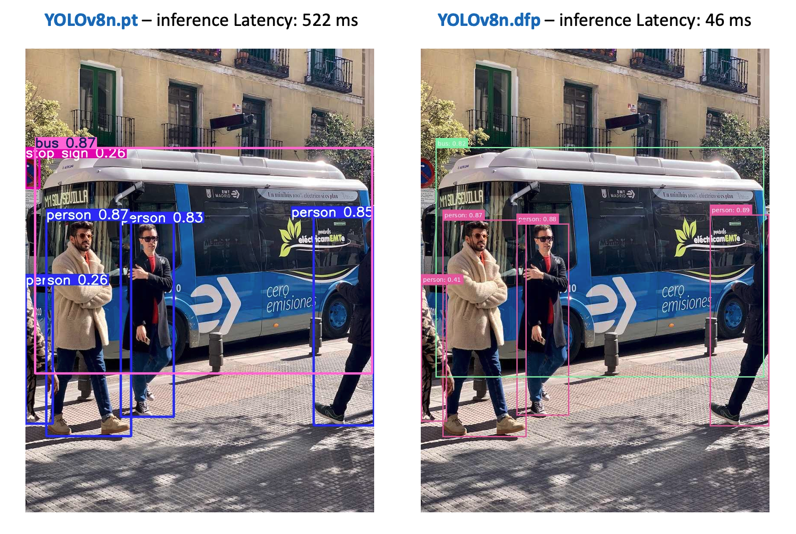
Going deeper in the functions
1. Image preprocessing (preprocess_image)
original image → resized → padded → tensor
- Load and normalize:
- Open the image with PIL, convert to RGB, and get its original size.
- Compute a scale
ratioso the image fits into 640×640 without distortion (preserving aspect ratio).
- Letterboxing:
- Resize the image to
(new_w, new_h) = (int(w * ratio), int(h * ratio)). - Paste it onto a 640×640 canvas filled with color
(114, 114, 114)(same as Ultralytics).
- Compute the padding offsets
(pad_w, pad_h)so we can undo this later.
- Resize the image to
- Tensor conversion:
- Convert to
numpy, normalize to[0,1], permute from HWC to CHW, and add a batch dimension to get shape[1, 3, 640, 640], which matches YOLOv8’s expected input.[1][2]
- Convert to
2. Decoding YOLOv8 output (decode_predictions)
How to turn raw model numbers into human-readable detections.
The raw output format:
- For COCO YOLOv8n ONNX, the detection head outputs a tensor of shape
(1, 84, 8400). 84 = 4 (bbox) + 80 (class scores). Each of the 8400 positions corresponds to one candidate box.
Function Walkthrough:
- Transpose:
- From
(1, 84, 8400)to(8400, 84)so each row is:[x_center, y_center, width, height, class_0_score, ..., class_79_score].
- From
- Best class per box:
- Take
max_scores = np.max(class_scores, axis=1)andclass_ids = np.argmax(class_scores, axis=1)to select the most likely class and its score for each of the 8400 candidates.
- Take
- Confidence filtering:
- Drop boxes whose max class score is below
conf_threshold.
- Drop boxes whose max class score is below
- Coordinate conversion:
- Convert from YOLO’s center-format
(x, y, w, h)to corner-format(x1, y1, x2, y2)to make drawing and IoU calculation simpler.
- Convert from YOLO’s center-format
- NMS:
- Call
apply_nmsto remove overlapping boxes and keep only the best ones.
- Call
3. IoU and NMS (compute_iou_batch and apply_nms)
IoU:
- IoU (Intersection over Union) measures overlap between two boxes:
\[\text{IoU} = \frac{\text{area of intersection}}{\text{area of union}}\] compute_iou_batchdoes this between one box and many boxes at once using vectorized Numpy operations.
NMS:
apply_nms:- Sort boxes by score descending.
- Repeatedly pick the highest-score box, compute its IoU with the remaining boxes, and discard those whose IoU is above
iou_threshold.
- The result is a list of indices for boxes that don’t overlap too much and represent unique objects.
4. Mapping back to the original image (scale_boxes_to_original)
Everything after the model must undo what preprocessing did.
- During preprocessing we:
- Rescaled the image by
ratio. - Padded by
(pad_w, pad_h).
- Rescaled the image by
- The model’s boxes live in that padded, resized 640×640 space.
scale_boxes_to_original:- Subtracts the padding.
- Divides by
ratioto go back to the original resolution. - Clips coordinates so they stay inside the original image bounds.
5. Drawing results (draw_detections)
model output → decoded boxes → drawn on the original image
- Make a copy of the original image and get an
ImageDrawcontext. - For each detection:
- Choose a color deterministically using
np.random.seed(class_id)so the same class always has the same color. - Draw the rectangle
[x1, y1, x2, y2]. - Build a label string
"class_name: confidence", measure text size usingtextbbox, draw a filled rectangle for the label background, and render the text.
- Choose a color deterministically using
6. The Memryx pipeline (detect_objects and AsyncAccl usage)
How to integrate Memryx’s async accelerator into a typical vision pipeline
- Preprocess once: call
preprocess_imageto get the model-ready tensor and the info needed for rescaling. - Create the accelerator:
accl = AsyncAccl(dfp_path)loads the compiled Memryx DFP model.accl.set_postprocessing_model(post_model_path, model_idx=0)attaches the ONNX post-processing graph.
- Streaming-style design:
frame_queueis a queue of inputs; you put your tensor in it.generate_frameis a generator feeding frames into the accelerator.process_outputis a callback that collects outputs intoresults.- The code wires them with
connect_inputandconnect_output, then waits for completion withaccl.wait().
- Post-processing:
- Grab the first output, call
decode_predictions, rescale boxes, and draw.
- Grab the first output, call
Making Inferences
Let’s change the script to easily handle different images and confidence threshold (yolov8_m3_detect_v2.py). We should replace the hardcoded IMAGE_PATH with a command-line argument:
import argparse
if __name__ == "__main__":
parser = argparse.ArgumentParser()
parser.add_argument(
"-i", "--image",
type=str,
required=True,
help="Path to input image"
)
parser.add_argument(
"-c", "--conf",
type=float,
default=0.25,
help="Confidence threshold"
)
args = parser.parse_args()
# Configuration
DFP_PATH = "./models/yolov8n.dfp"
POST_MODEL_PATH = "./models/yolov8n_post.onnx"
IMAGE_PATH = args.image
CONF_THRESHOLD = args.conf
# Run detection
detections, annotated_image, inference_time = detect_objects(
DFP_PATH,
POST_MODEL_PATH,
IMAGE_PATH,
CONF_THRESHOLD
)
# Print results
print(f"\n{'='*60}")
print("Detection Results:")
print(f"{'='*60}")
for i, det in enumerate(detections):
x1, y1, x2, y2, conf, class_id = det
print(f" {i+1}. {COCO_CLASSES[int(class_id)]}: {conf:.3f}")
print(f" Box: [{int(x1)}, {int(y1)}, {int(x2)}, {int(y2)}]")
# Save annotated image
if len(detections) > 0:
output_path = IMAGE_PATH.rsplit('.', 1)[0] + '_detected.jpg'
annotated_image.save(output_path)
print(f"\nSaved: {output_path}")
print(f"\n{'='*60}")
print(f"Total: {len(detections)} objects")
print(f"Time: {inference_time:.2f} ms")
print(f"{'='*60}")We can run it as:
python yolov8_mx3_detect_v2.py --image ./images/home-office.jpg -c 0.2Here are some results with other images:
Inference with a custom model
As we saw in the YOLO chapter, we are assuming we are in an industrial facility that must sort and count wheels and special boxes.
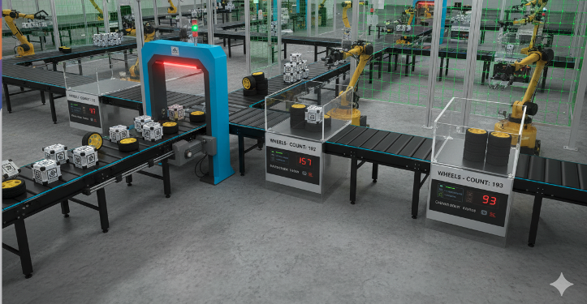
Each image can have three classes:
- Background (no objects)
- Box
- Wheel
We have captured a raw dataset using the Raspberry Pi Camera and labeled it with the ROBOFLOW. The Yolo model was trained on a Google Colab using Ultralytics.
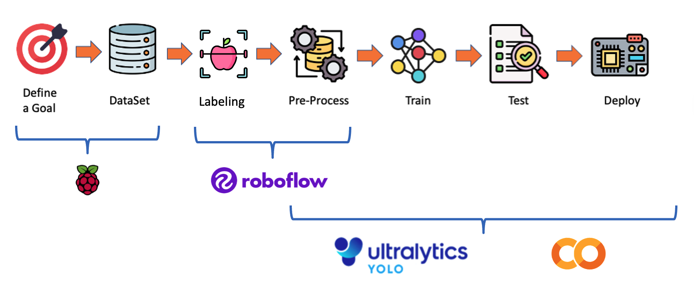
After training, we download the trained model from /runs/detect/train/weights/best.pt to our computer, renaming it to box_wheel_320_yolo.pt.
Using the FileZilla FTP, transfer a few images from the test dataset to
.\images:
Let’s return to the ./MEMRYX/YOLO folder and using the Python Interpreter, to quickly do some inferences:
pythonWe will import the YOLO library and define the model to use:
>>> from ultralytics import YOLO
>>> model = YOLO('./models/box_wheel_320_yolo.pt')Now, let’s define an image and call the inference (we will save the image result this time to external verification):
>>> img = './images/box_3_wheel_4.jpg'
>>> result = model.predict(img, save=True, imgsz=320, conf=0.5, iou=0.3)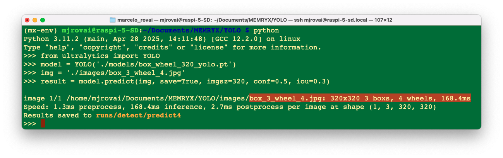
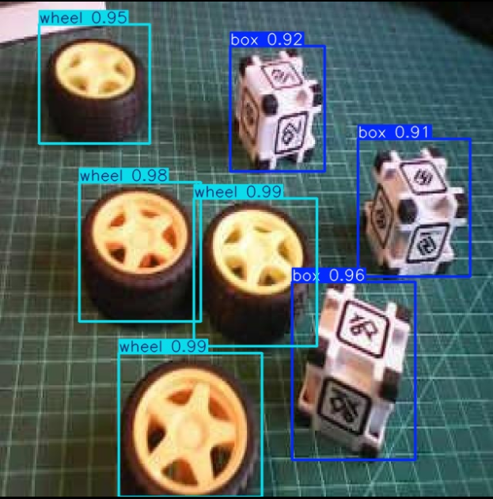
We can see that the model is working and that the latency was 168 ms.
Let’s now export the model first to ONNX and after to FFPls
, to run it in the MX3 device:
cd ./models
yolo export model=box_wheel_320_yolo.pt format=onnx
mx_nc -v --autocrop -m box_wheel_320_yolo.onnx
cd ..In the models folder, we will have box_wheel_320_yolo.dfp and box_wheel_320_yolo_post.onnx
Let’s adapt the previous script to be more generic in terms of models (box_wheel_mx3_detect_v2.py):
Naturally we should enter with the new models ’names and instead of COCO_LABELS, the script was changed to:
# dataset class names CLASSES = [ 'Box', 'Wheel' ]Thant’s all!
Run it with:
python box_wheel_mx3_detect_v2.py --image ./images/box_3_wheel_4.jpg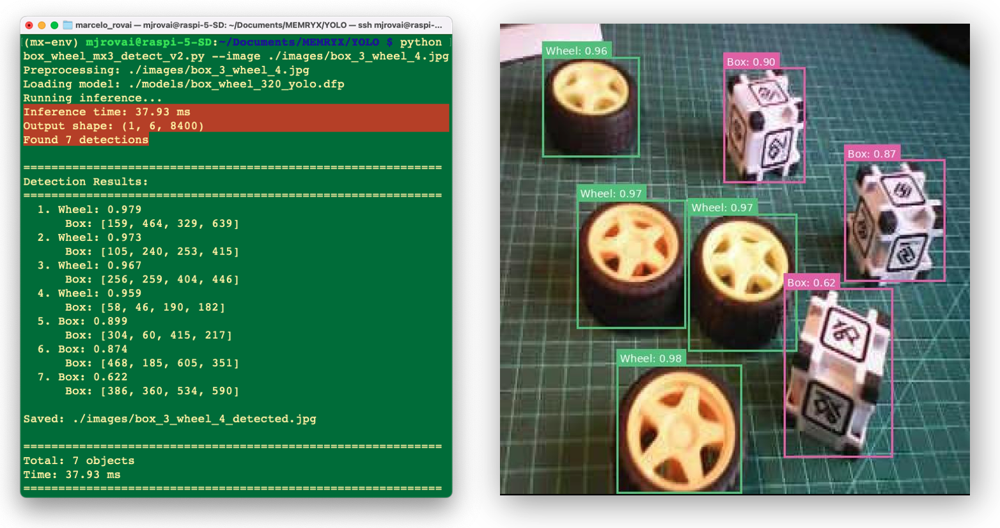
The Result was great! And the latency (~38 ms) was 4 times lower than with the CPU-only approach (even smaller than the model exported to NCNN, runing 100% at CPU - 80 ms).
Adjusting Confidence Threshold
Lower confidence for more detections (may include false positives):
python box_wheel_mx3_detect_v2.py --image ./images/box_3_wheel_4.jpg -c 0.15We should experiment with the right confidence threshold.
Advanced Topics
Batch Processing (Optimization)
For multiple images, reuse the accelerator instance:
accl = AsyncAccl(dfp_path)
accl.set_postprocessing_model(post_model_path)
for image_path in image_list:
detections = detect_single_image(accl, image_path)Thermal Management
Always monitor temperature during operation:
watch -n 1 cat /sys/memx0/temperatureConfidence Threshold Tuning
- 0.15-0.20: Maximum recall (catch everything)
- 0.25-0.40: Balanced (default)
- 0.45-0.50: High precision (only confident detections)
Model Selection
- yolov8n: Fastest, 3.2M parameters
- yolov8s: Balanced, 11.2M parameters
- yolov8m: Accurate, 25.9M parameters
Exploring MemryX eXamples
MemryX eXamples is a collection of end-to-end AI applications and tasks powered by MemryX hardware and software solutions. These examples provide practical, hands-on use cases to help leverage MemryX technology.
Clone the MemryX eXamples Repository
Clone this repository plus any linked submodules:
git clone --recursive https://github.com/memryx/memryx_examples.git
cd memryx_examplesAfter cloning the repository, you’ll find several subdirectories with different categories of applications:
- image_inference - Single image classification and detection
- video_inference - Real-time video processing
- multistream_video_inference - Multi-camera scenarios
- audio_inference - Audio processing and speech recognition
- open_vocabulary - Open-set classification tasks
- accuracy_calculation - Model accuracy verification
- multi_dfp_application - Running multiple models
- optimized_multistream_apps - Production-ready multi-stream examples
- fun_projects - Creative applications and demos
These examples demonstrate best practices for:
- Preprocessing pipelines
- Multi-threaded inference
- Output visualization
- Performance optimization
- Multi-model orchestration
Exploring these examples is an excellent way to learn production-ready patterns for deploying MemryX applications.
Troubleshooting Common Issues
Device Not Detected
Symptom: ls /dev/memx* returns “No such file or directory”
Solutions: 1. Verify physical connection: Reseat the M.2 module in its slot 2. Check PCIe settings: bash sudo raspi-config # Navigate to: Advanced Options → PCIe Speed → Enable PCIe Gen 3 sudo reboot 3. Verify in kernel logs: bash dmesg | grep -i memryx lspci | grep -i memryx
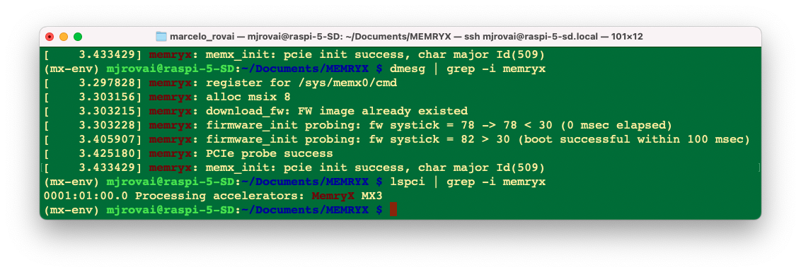 4. Ensure sufficient power: Use the official Raspberry Pi 27W power supply 5. Check HAT installation: Ensure the M.2 HAT is properly seated. 6. Lower Frequency: Try running sudo mx_set_powermode with a lower frequency, such as 200 or 300 MHz. Then restart mxa-manager for good measure with sudo service mxa-manager restart
> If decreasing the frequency solves the issue, then you can either keep the default frequency for all DFPs at 300 MHz (or 400, 450, etc.), or you can raise it back to 500 MHz and use the [C++ API's set_operating_frequency function](https://developer.memryx.com/api/accelerator/cpp.html#_CPPv4N2MX7Runtime10MxAcclBase23set_operating_frequencyEiN2MX5Types17MxFrequencyOptionE) to change the clock speed on a per-DFP basis.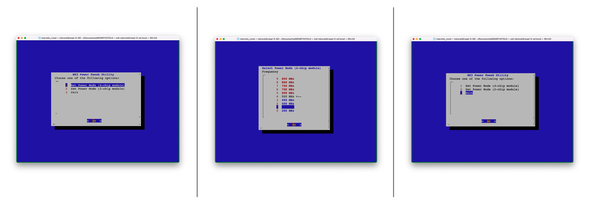
Compilation Errors
Symptom: mx_nc fails with “Unsupported operator” error
Solutions: 1. Check the supported operators 2. Some custom layers may need reformulation 3. Try exporting to ONNX first for better compatibility: ```python import tensorflow as tf import tf2onnx
model = tf.keras.models.load_model(‘model.h5’) onnx_model, _ = tf2onnx.convert.from_keras(model) with open(“model.onnx”, “wb”) as f: f.write(onnx_model.SerializeToString()) ``4. Check the compilation log (-v` flag) to identify which specific layer is causing issues
Thermal Throttling
Symptom: Performance degrades over time, temperature > 90°C
Solutions: 1. Verify heatsink installation: Ensure thermal paste is properly applied and heatsink is firmly attached 2. Improve airflow: Position the Raspberry Pi for better air circulation 3. Check ambient temperature: Ensure the room temperature is reasonable (<30°C) 4. Monitor continuously:
watch -n 1 cat /sys/memx0/temperature- Consider additional cooling: Add a small fan directed at the heatsink
Python Version Conflicts
Symptom: pip install memryx fails with compatibility errors
Solutions:
Verify Python version:
python --version # Must show 3.11.x or 3.12.x pip --version # Should match the Python versionEnsure you’re in the virtual environment:
which python # Should point to mx-env/bin/pythonTry reinstalling in a fresh virtual environment:
deactivate rm -rf mx-env python -m venv mx-env source mx-env/bin/activate pip install --upgrade pip wheel pip install --extra-index-url https://developer.memryx.com/pip memryx
Low FPS / Poor Performance
Symptom: Benchmark shows much lower FPS than expected
Solutions: 1. Check for thermal throttling: bash cat /sys/memx0/temperature # Should be <80°C 2. Verify PCIe Gen 3 is enabled (not Gen 2): bash sudo raspi-config # Advanced Options → PCIe Speed 3. Close other PCIe-intensive applications: Ensure no other devices are saturating the PCIe bus 4. Check for background CPU load: bash htop 5. Verify driver version: Ensure you have the latest drivers
apt policy memx-drivers- Verify Frequency
By default, the frequency should be at 500 MHz. Smaller frequencies will reduce the FPS (increase the latency)
mx_bench --helloImport Errors
Symptom: ImportError: cannot import name 'SyncAccl' from 'memryx'
Solutions: 1. Ensure memryx is installed in the current environment: bash pip list | grep memryx 2. Reinstall if necessary: bash pip install --force-reinstall --extra-index-url https://developer.memryx.com/pip memryx 3. Check Python path conflicts: python import sys print(sys.path)
Model Accuracy Issues
Symptom: Inference results are incorrect or significantly different from CPU
Solutions: 1. Verify preprocessing: Ensure the same preprocessing is applied as during training 2. Check input normalization: Confirm the value range matches training (e.g., [0, 1] vs [-1, 1]) 3. Test with known inputs: Use the validation dataset to verify accuracy 4. Compare outputs numerically: Print raw logits/probabilities to identify differences 5. Check for quantization effects: If using -q flag, try without quantization first
Next Steps and Extensions
Project Ideas
- Real-time Object Detection with Camera
- Integrate picamera2 with YOLO
- Display bounding boxes in real-time
- Measure end-to-end latency (capture → inference → display)
- Multi-Model Pipeline
- Use detection + classification cascade
- Leverage multiple MX3 chips for parallel inference
- Build a smart surveillance system
- Custom Model Deployment
- Train your own model for a specific task
- Optimize and compile for MX3
- Compare against the models from previous labs
- Power Efficiency Study
- Measure power consumption with a USB meter
- Compare CPU vs. MX3 energy per inference
- Calculate battery life for mobile applications
- Multi-Stream Processing
- Process multiple camera streams simultaneously
- Demonstrate chip utilization across streams
- Build a multi-camera monitoring system
Advanced Topics to Explore
- Quantization: Experiment with 8-bit and 4-bit quantization for even better performance
- Model Zoo: Explore pre-optimized models in the MemryX Model Explorer
- Async API: Use AsyncAccl for non-blocking, concurrent processing
- Custom Operators: Learn to handle models with custom layers
- Multi-chip Scaling: Understand how workload distributes across the four accelerators
Conclusion
In this lab, we’ve explored hardware acceleration for edge AI using the MemryX MX3 accelerator. We’ve learned:
- ✅ How to install and configure the MX3 hardware
- ✅ The MX3 compilation and deployment workflow
- ✅ How to benchmark and measure performance
- ✅ Building complete inference applications
- ✅ Comparing CPU vs. dedicated accelerator performance
The MX3 demonstrates that dedicated AI accelerators can deliver significant performance improvements for edge applications, achieving FPS several times higher (up to 25x for ResNet-50) than CPU inference while maintaining accuracy and providing deterministic latency.
As edge AI continues to evolve, hardware acceleration will become increasingly important for real-time, power-efficient deployments. The skills we’ve developed in this lab—understanding the compilation workflow, benchmarking methodologies, and performance optimization—will transfer to other accelerator platforms as well.